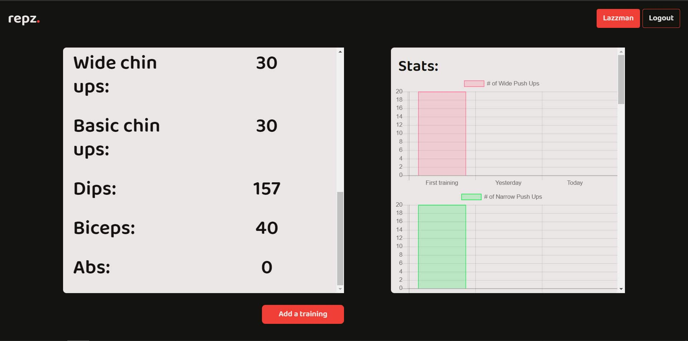
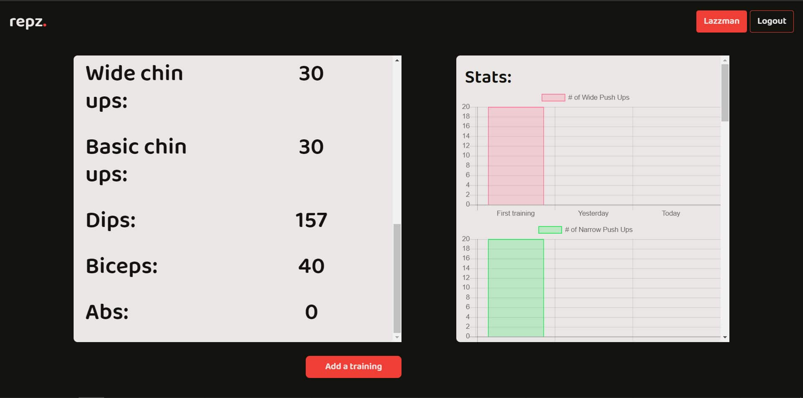

Uvod u Django
1.deo
U današnjem tutorijalu, pokazaću vam neke osnovne stvari koje se tiču Djanga, Pythonovog frameworka koji će Vam mnogo olakšati posao prilikom izrade web aplikacija.
Pravićemo aplikaciju za evidenciju treninga, koju sam ja već uradio u PHPu, ali sam hteo da je prebacim u Django pa eto prilike i za tutorijal istovremeno.
Aplikacija će se sastojati iz više delova:
- - Login/Register forme
- - Pregleda odrađenih treninga
- - Unosa novih treninga
Za ovaj tutorijal je potrebno osnovno znanje HTMLa i CSSa, a što se tiče Pythona, u principu nije potrebno ništa jer ću pokušati da objasnim sve što koristimo, ali bi svakako značilo znati makar osnovnu sintaksu.
Sve što budemo radili ćemo takođe kačiti na GitHub pomoću git-a, tako da ću se osim Djanga pozabaviti malo i gitom.
Kako će otprilike izgledati ono što ćemo uraditi? Ovo je verzija urađena u PHPu:

 

Sad kad konačno znamo šta ćemo praviti, hajde da počnemo.
1. Instalacija Djanga i inicijalizacija projekta
Pre početka bilo čega, potrebno je da imate instaliran Python. Ukoliko nemate, možete ga skinuti ovde. Ja koristim verziju 3.7.7, pa ukoliko želite da imate identično kao što će biti rađeno u ovom tutorijalu, instalirajte tu verziju.
Nakon instalacije Pythona, instaliramo Django: pip install django .
Kada to završimo, možemo početi sa inicijalizacijom projekta. Komandu koju koristimo je: django-admin startproject ime_projekta .
Ono što ova komanda radi jeste da pravi folder sa imenom ime_projekta i unutra smešta početne fajlove za projekat. Dakle, nije potrebno praviti folder za projekat pa u njemu pokretati ovu komandu, već će Django to uraditi za vas.
Projekat nazovite kako god želite, ja ću na osnovu slika gore - repz.
2. Pravljenje repozitorijuma na GitHubu
Kada smo napravili folder sa fajlovima koje ćemo koristiti, sada ćemo to povezati sa GitHubom.
U folderu našeg projekta, u terminalu kucamo: git init. Ono što će ova komanda uraditi jeste da će nam omogućiti da pratimo naš projekat pomoću gita, evidentiraće sve promene koje ćemo commitovati kada dođe vreme.
Da ne bih pisao komandu po komandu šta koja radi, drugarica sa Programmer Buddyja je već pokrila osnovne git komande: Osnovne git komande .
Kada smo inicijalizovali projekat na gitu, dodajemo sve fajlove: git add . -- Da, tačka je deo koda i označava da sve fajlove želimo da dodajemo :)
Tako dodate fajlove želimo da commitujemo, tj. zapamtimo: git commit -m "Initial commit" . Dodatak -m "Neka poruka" je opcion, ali je neka dobra praksa napisati šta su promene, pogotovo kada se radi u timu, da bi ostali znali šta je promenjeno u kodu.
Primer - u našem slučaju, završili smo Login za korisnika, commit bi izgledao: git commit -m "Completed login" . Sažeta poruka koja govori šta je urađeno.
Sada idemo na GitHub, ukoliko nemate nalog, registrujte se i kada to završite u gornjem desnom uglu ćete videti:

Biramo New repository i u novom prozoru dajemo ime repozitorijumu i pravimo ga. Nakon toga, iskoćiće nam ekran:

Zanima nas donji skup komandi, koje ćemo kucati nazad u terminalu. Dakle bukvalno je potrebno da prepišete ono što vam piše u donjem delu.
Nakon toga smo konačno spremni da pravimo aplikaciju.
3. Pokretanje servera
Prvo ćemo pokrenuti lokalni server pomoću Djanga, pa ćemo pričati o fajlovima koji se već nalaze u folderu.
python manage.py runserver
Ova komanda će pokrenuti lokalni server i u terminalu bi trebalo da dobijete poruku nešto nalik ovoj:
Kao što možemo videti, pokrenut je server na adresi 127.0.0.1:8000, pa kada u pretraživaču odemo na tu adresu, trebalo bi da nam izađe ovo:
Ukoliko vidite ovo znači da je sve prošlo kako treba :)
Ovde ću stati, počeci i instalacije uvek mogu biti problematične, tako da ukoliko nešto ne radi slobodno mi pišite na Instagramu ili Facebooku. Ubrzo ide i drugi deo :)
Hvala što ste čitali, nadam se da je bilo korisno. :)